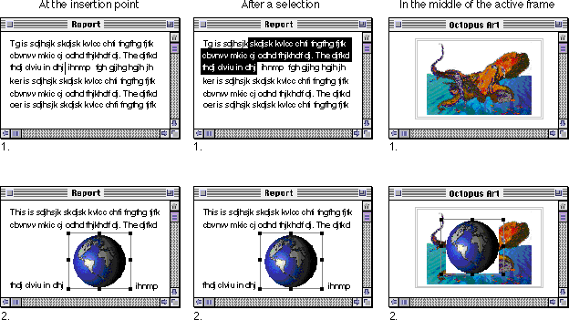
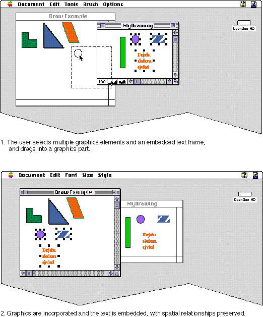

Transferring Data
Users transfer data to embed parts into documents, to adjust the position of content, to edit content, or to change the containing part of an embedded part. The data transferred can be all or a portion of a part's intrinsic content, it can be a single frame and its embedded part, or it can be a combination of intrinsic data plus embedded parts. This section describes how your part should implement data-transfer behaviors.Data transfers can be within the same part or between separate parts, and they are either copies or moves:
The part that initiates a data transfer is the source part; the part that receives the data is the destination part. Whenever your part is the source of data to be transferred, you should provide more than one kind of content. In addition to the preferred native data format of your part editor, you should also include one or more widely supported data kinds, even if some loss of fidelity (equivalence to your native format) occurs. For example, if your part creates tabular spreadsheet data, you may also provide a tab-delimited text version of the content when transferring it. That way, the user can copy the basic information even if your part editor is not present when the user performs the paste.
- Users can copy selected data in three ways: (1) choosing the clipboard Copy command followed by the Paste command; (2) dragging the data to a location in a different part and dropping it there; (3) dragging the data to a location in the same part and dropping it there while holding down the Option key.
- Users can move selected data in three ways: (1) choosing the clipboard Cut command followed by the Paste command; (2) dragging the data to a location in the same part and dropping it there; (3) dragging the data to a location in a different part and dropping it there while holding down the Control key.
The destination part, when it receives transferred data, decides whether to accept it or not, and whether to incorporate the data into its intrinsic content, or whether to embed it as a separate part. Users can override the destination part's default decision by using the Paste As command (see "Paste As").
Note that when a copy operation is complete, a duplicate of the source data exists at the destination, although its embedding status might change. Depending on user instruction and the characteristics of the data, a copy of intrinsic content at the source might be embedded in the destination, and a copy of an embedded part at the source might be incorporated into the destination.
Single Parts Versus Intrinsic Content
Data transferred from a source to a destination part is in either of two configurations: a single frame or icon that represents an entire embedded part, or a portion of a source part's intrinsic content.If the user selects an embedded part's frame or icon and drags it to another part, or cuts or copies it to the clipboard, that transferred data is considered to be a single part. It may have any number of other parts embedded in it, but it includes no surrounding intrinsic content of its containing part. By convention, a destination part should always embed data transferred as a single part, even if the destination part can read and incorporate the data. Following this convention ensures that single embedded frames by default remain embedded frames when dropped or pasted. (The user can override this convention in any individual case with the Paste As command.)
If the data being transferred is anything but a single frame or icon, it is considered to be intrinsic content--of the same part kind as the intrinsic content of the source from which it came--plus possibly one or more parts embedded in that intrinsic content. If the destination part decides to accept the transferred data, it analyzes only the intrinsic content when deciding whether to incorporate or embed; embedded parts within that intrinsic content are always embedded, unchanged, in the destination.
Incorporating Transferred Data
If your part is the destination part in a data-transfer operation, it can incorporate--rather than embed--the transferred data in these situations:When incorporated, the transferred content appears at the current pointer location or at the appropriate default location, as described in the section "Where to Place Transferred Data".
- if the user transfers intrinsic content of your part into another frame of your part or within the same frame
- if the user copies or cuts data from a part whose part kind your editor can read
- if the user employs the Paste As command to force a single frame's content to be incorporated (assuming that your part editor can read the content)
The user can specify, in the Paste As dialog box, that transferred data be converted to a different part kind before it is incorporated or embedded in the destination. OpenDoc lists the translation options for the user. If your part is the destination part, you can then do the translation yourself, or you can use OpenDoc's translation facility.
Embedding Transferred Data
If your part is the destination part in a data-transfer operation, it can embed the transferred data as a separate part in these situations:When embedding, the destination part creates a new embedded frame, places it as described in "Where to Place Transferred Data" (next), and inserts the transferred data into it as a separate part. Once it is transferred, the embedded part appears in the view type that its containing part prefers, regardless of what display form it had in its source location.
- if your part editor cannot manipulate any of the kinds of data in the intrinsic content being transferred
- if the user transfers an entire part as a unit in a single frame, regardless of whether your part editor can read the data
- if the user employs the Paste As command to force content to be embedded, even though your part editor can read the content
Where to Place Transferred Data
This section explains where a destination part should place data transferred to it and how it should provide selection feedback to the user.Inserting a Document
When inserting a document through the Insert command (see "Document Menu" shows examples of the correct placement of documents in those three situations. In each case in these examples, the document is embedded as a part rather than incorporated as intrinsic content.Figure 14-7 Placement of an inserted document

After insertion, the inserted content should be selected, but only if that is appropriate for your part's selection model. If both parts are text, for example, there should be no selection; an insertion point should follow the inserted text.Your part (the containing part) draws the selected frame border. If appropriate, notify the embedded part of the highlighting it should use to be consistent with your part's highlighting. Give the inserted part the view type (icon or frame) that your part prefers, regardless of the display form it had before insertion.
Pasting
When the user transfers data by using the Paste command, replace the current selection with the pasted data, following the same placement rules as shown in Figure 14-7--except that you replace the current selection with the pasted data, rather than placing the data after the selection.Dropping
When the user drops data into your destination part, follow the same placement rules as shown in Figure 14-7. Either display selection feedback around the dropped content, or--if the dropped data and the destination are both text--place an insertion point after it. Do not replace any existing selection. Unlike a paste operation, drag and drop is not destructive to the existing content.Preserving Relationships
Whenever possible, preserve all relationships among elements that the user moves, including spatial relationships, links, and other connections. For example, transferred data may consist of multiple objects (possibly including both intrinsic content and embedded parts) that have specific spatial relation-
ships to each other in the source location. If the transferred data is incorporated in the destination, the destination part should maintain those relationships as it incorporates intrinsic data and embeds parts. If the transferred data is embedded, it is up to the part editor of the newly embedded part to maintain those relationships. Figure 14-8 shows an example of incorporating data that includes embedded parts. The layout of the copied intrinsic content and embedded frames is preserved in the destination.Figure 14-8 Embedding a selection of multiple parts in a new part

There are some exceptions to this guideline. For example, pasted text content is usually rewrapped to fit the context into which it is pasted.Pasting With the Paste As Dialog Box
The destination part of a data-transfer action handles the Paste As dialog box (Figure 8-3data. If the destination part does not allow embedding of any of the part kinds present in the data to be pasted or dropped, it should disable the Paste and Paste As menu commands (in the case of clipboard data), or not display drag feedback and not accept a drop (in the case of dragged data).As with a normal Paste operation, the destination part should either incorporate the pasted content or embed it as a separate part, depending on whether the destination part editor can read the transferred data's intrinsic content. The user can override this behavior by using the At the Destination radio buttons in the Paste As dialog box (see Figure 8-3), as follows:
- Note
- If your part is in a document in a background process, it cannot invoke the Paste As dialog box.
However, if the destination part can't incorporate any of the part kinds present in the part that is to be pasted, OpenDoc automatically selects the Embed As radio button (and disables the Merge with Contents radio button).
- The user can force the pasted content to be incorporated, even though it might mean severe loss of fidelity of the data, by clicking the Merge with Contents button. In this case, your destination part should paste the content into your part in whatever form it can. For example, a graphic pasted into a text part might appear as PostScript commands.
- The user can force the pasted content to be embedded, even if it is the same part kind as the destination, by clicking the Embed As radio button and choosing a kind in the pop-up menu. The menu choices are listed according to the preserved fidelity of the data, highest fidelity first.
How your part displays and handles the Paste As dialog box is described in more detail in the section "Handling the Paste As Dialog Box"